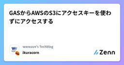
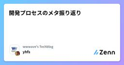
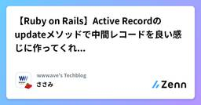
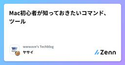
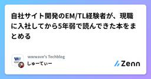
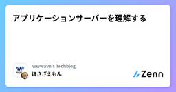

wwwave's Techblogのフィード
https://zenn.dev/p/wwwave
株式会社ウェイブのエンジニアによるテックブログです。 弊社では、電子コミック、アニメ配信などのエンタメコンテンツを自社開発で運営しております！ https://wwwave.jp/service/
フィード

GASからAWSのS3にアクセスキーを使わずにアクセスする
wwwave's Techblogのフィード
【🎄Merry Christmas🎄 WWWAVE アドベントカレンダー 12/13の記事です】 概要GAS(Google Apps Script)を使いAWSのS3にcsvをアップロードする処理があった認証にアクセスキーを使っていたがセキュリティ的なリスクがあるよりセキュアな運用をするためアクセスキーではなくIDフェデレーションで認証するようにする きっかけAWSを外部から操作する手段としてアクセスキーを利用するケースはあるかと思います。実際にGASからS3にcsvをアップロードする処理があり、その認証にアクセスキーを使っておりそれを当たり前として運用していました...
15時間前

開発プロセスのメタ振り返り
wwwave's Techblogのフィード
ここ数年で開発プロセスの改善を試行錯誤してきたのですが、一番大事なのはきちんと振り返りをすることだなあと最近感じています。私が所属するチームでは過去に（ほぼ）スクラム開発方式を採用しており、一度手放した後、現在少しずつスクラムに回帰しつつあるという状況です。この過程を振り返り、今の考えに至った経緯を書いていきます。 概要振り返りはしなければならない。全てのものに意味があるということはないが、振り返りが全てのものに意味を持たせる。（主観）プロダクトを成長させるための戦略をチームの軸として持っておき、振り返りが戦術的な意味に閉じないようにしたい。 想定読者（私が意見をほし...
1日前

【Ruby on Rails】Active Recordのupdateメソッドで中間レコードを良い感じに作ってくれるようなので詳しく見てみる 1
1
wwwave's Techblogのフィード
🎄Merry Christmas🎄 WWWAVE アドベントカレンダー 12/12の記事です はじめに※テーブル名とかAIの出力とかは例ですtagsのidが入った配列tag_idsに同期させるようにbooksとtagsの中間テーブルであるbook_tagsのレコードを作成/削除する処理を書いていたとき、AIに頼んだら以下のようなコードを出してきましたbook = Book.find_by(id: 1)tag_ids = [1,2,3]book.update(tag_ids: tag_ids)リレーションはこんな感じですbook.rbhas_many :book_t...
1日前

Mac初心者が知っておきたいコマンド、ツール
wwwave's Techblogのフィード
🎄Merry Christmas🎄 WWWAVE アドベントカレンダー 12/11の記事です はじめに私はもともと仕事でも、プライベートでもWindowsをメインに使っていました。今回、職場で新しくMacを使って仕事ができるようになったのですが、Windowsとショートカットやツール、UIなど違いに戸惑いました。その中でも、特に知っておきたいコマンドやツールをまとめておきました。 知っておきたいコマンド スクリーンショットWindowsなら「Win + Shift + S」でスクショができたのですが、MacだとそもそもWindowsキーがないです。Windowsだ...
2日前
イベントソーシングを理解する
wwwave's Techblogのフィード
🎄Merry Christmas🎄 WWWAVE アドベントカレンダー 12/10の記事です はじめに現在ウェイブでは、「決済分離プロジェクト」に取り組んでいます。このプロジェクトの目的は、バックエンドのモノリスに長年つぎ足しで実装されてきた決済ロジックを、決済ドメインをモジュール化したモジュラーモノリスに切り出すことで、抱えている技術的負債を抜本的に解消することです。実装方針としては DDD（ドメイン駆動設計）を採用しており、集約の永続化には『ドメイン駆動設計をはじめよう』に登場するイベントソーシングを用いた「イベント履歴式ドメインモデル」を使っています。とはいえ、着手した...
3日前

自社サイト開発のEM/TL経験者が、現職に入社してから5年弱で読んできた本をまとめる
wwwave's Techblogのフィード
【🎄Merry Christmas🎄 WWWAVE アドベントカレンダー 12/9の記事です】株式会社ウェイブでフルスタックエンジニアをしている多田です。今回は、現職に入社してから5年弱で読んできた本を、ざっくりのステージ別にまとめてみました。今後のキャリアに悩まれている方や、どんな知識を取り入れていけばいいのか迷っている方々に対して、自社サイト開発のいちEM/TL経験者としての視点が参考になれば幸いです。※EM：エンジニアリングマネージャーTL：テックリード 筆者の経歴大学時代産業組織心理学を専攻。男女比3:7の中で育つ。就職活動にあたって、「そういえば中学の時...
5日前

アプリケーションサーバーを理解する
wwwave's Techblogのフィード
🎄Merry Christmas🎄 WWWAVE アドベントカレンダーの12/8の記事です！ごきげんよう国内向け漫画配信サイトComicFestaの開発をしているほさざえもんです今回は、簡易的な puma もどきを自作して、rails s を使わずに Rails アプリを動かしてみました。アプリケーションサーバーの理解度を上げるのが目的です！ きっかけ日々の開発や障害調査の中で、「クライアント⇄アプリの通信のどこで問題が起きてるの？」っていう切り分けがめちゃくちゃ大事だと感じています。ただ、自分自身がアプリケーションサーバーの仕組みを理解しきれていないと気づいたので、...
6日前

Chromeの恐竜が走るやつを作ってみたかった話
wwwave's Techblogのフィード
【🎄Merry Christmas🎄 WWWAVE アドベントカレンダー 12/7の記事です】 前置き通信ができないときにChromeで遊べる恐竜のゲーム面白いですよね。シンプルながらついついやりたくなるタイプのやつです。先日ふと恐竜以外のものを走らせてみたいなーと思ったので、作ってみることにしました。 完成物こんな感じになりました。キャスター付き椅子に乗ったまま滑走してもらってます。gifにしたらもっさりしちゃいました。本来はもう少し速いです。 利用したもの Google Geminiおおまかなコードを全部作ってもらいました。 Google Apps ...
7日前

最近AIエージェントにやらせて良かったこと ３選
wwwave's Techblogのフィード
【🎄Merry Christmas🎄 WWWAVE アドベントカレンダー 12/6の記事です】AIエージェントに様々なことを任せられるようになってきた今日この頃、最近やらせて良かったな〜ってことを３つ紹介します！どれも内容は地味ですが、同じような困りごとがある人の参考になればと思います。 GA4のイベント一覧出力webページの効果測定のためにGA4を利用しており、新機能追加や機能改善のたびに、ビューイベントやクリックイベントを設定しています。そして、効果測定のタイミング(1,2週間後)で、GA4のレポートや探索を使って、検証をするのですが、そのたびに、「あれ？イベント名...
7日前

JetBrains社のIDEは何がいいのか
wwwave's Techblogのフィード
【🎄Merry Christmas🎄 WWWAVE アドベントカレンダー 12/5の記事です】株式会社ウェイブのエンジニア兼PdMの肥沼です。私は仕事ではvscodeを、個人開発ではJetBrains社のIDEを愛用しています。PyCharm ProとJetBrains AI Ultimateにしっかり課金するほど使っています。よく会社の同僚に「JetBrains？なにそれおいしいの？」「vscodeでいいじゃんwww」と言われることが多くそのたびに「なんで自分はJetBrains社のIDE」を使っているんだろうと思ます。今まで言語化したことがなかったので、この記事で私がなぜJ...
8日前
【AI Studio】Gemini 3でJSロジック同士を戦わせるゲーム作ってみた
wwwave's Techblogのフィード
【🎄Merry Christmas🎄 WWWAVE アドベントカレンダー 12/4の記事です】皆様こんにちわこの記事を開いてくれてありがとうございます今回は11月に導入されたGemini3の凄さを少し試してみようかと思います AIStudioを使ってJSロジック同士を戦わせるゲームを作るプレイヤーがNPCの動きをJavascriptで書いて戦わせるゲームこれは前バージョンで作ろうとしてなかなか上手く行かなかったものですユーザーがコードを書く場所など細かい要件が伝わらず失敗した記憶があります今回Gemini3を使って再チャレンジします！！プロンプトは下記です(ちなみにこ...
9日前
バイブコーディングで視聴数予測シミュレータ作ってみた
wwwave's Techblogのフィード
どうも、海外向けアニメ配信サービスを開発しているsazです2025年株式会社WWWaveアドベントカレンダー3日目やっていきましょう今回は、自社のアニメ配信サービスにおけるアニメ作品の視聴数予測シミュレータをバイブコーディングしてみたのでその紹介です 視聴数予測シミュレータって何？新たに配信したい候補作品が自社サービスでどれくらい視聴数を取れそうなのか？これを予測するシステムです配信作品を調達する時、予測視聴数を元にしてどれくらいの金額(ロイヤルティ)を支払えるのかを算出する必要がありますその視聴数およびロイヤルティを自動で算出してくれます 開発のきっかけ調達スピー...
10日前
Jiraのいろんなレポート機能を見てみる
wwwave's Techblogのフィード
2025年株式会社WWWaveアドベントカレンダー2日目最近チームの開発プロセスを見直しています（n回目）。私の所属するプロダクトチームではプロジェクト管理にJiraを利用していますが、機能を使いこなせていない感覚をずっと抱いており、今回これまで全部は見ていなかったレポート機能もいろいろ見てみようと思いました。 概要Jiraにはいろんなレポート機能が用意されているので、とりあえず見てみて、チームにあったものを使うと良さそう。「管理チャート」から、課題の粒度の問題が見つけられた！今のチームのワークフローを維持したままツールで効率化することを考えるのではなく、ツールの機能...
12日前
VSCode GitHub copilot とCursor 1ヶ月使ってみたレポート
wwwave's Techblogのフィード
【🎄Merry Christmas🎄 WWWAVE アドベントカレンダー 12/1の記事です】AIでコーディングすることが流行している今日、流行りにのるために、２種類のAIコーディングエージェントを1ヶ月間使ってみました。個人的な感想が主になりますが、これからAIでコーディングしようという方たちの参考になればと思います。 前提 使い分けGitHub Copilot · あなたの AI ペア プログラマー : フロントエンドの修正担当Cursor: AIで最もスマートにコードを書く方法 : バックエンドの修正担当 モデルClaude Sonnet 4....
12日前
🎄Merry Christmas🎄 WWWAVE アドベントカレンダー
wwwave's Techblogのフィード
2025年12月。株式会社WWWave エンジニアチーム内で社外ブログアドベントカレンダーに挑戦します!テーマは、何でもありです！弊社は土日休みのため、平日のみ投稿します！チームの皆さんのご協力があり、気合で土日も投稿する事になりました！（平日に記事作成し、予約投稿する予定です。休日はしっかり休みますので、ご安心ください〜）果たしてクリスマスまで続くのか、、？！乞うご期待です！ 📅 カレンダー（2025年12月）記事名は略して表示日月火水木金土-123456-VSCodeとCursor比較Jiraのいろんなレポー...
13日前
【失敗】勝手に画像を転載してくる輩のためにAIにコード書いてもらって画像に電子透かしを入れようとしたが、うまくいかなかった話【解決策求む】
wwwave's Techblogのフィード
お世話になっております！株式会社ウェイブでCoolmicという英語圏向け漫画配信サイトの開発を行っているささみと申します！どの漫画サービスも同様だと思いますが、現在Coolmicでは漫画の違法アップロード対策に苦慮しています今回、違法サイトにアップロードされていたコンテンツの画像からどのユーザーがいつ画像を抜いたかを検知するために、電子透かしの実装にチャレンジしました※筆者は信号処理や画像処理について一切の知識がないため、明らかにおかしい記述があるかもしれません※もしあったらコメント欄で教えてください（コメント稼ぎ） 要件コンテンツの販売サイトである以上、ユーザーが購入し...
25日前
アジャイルを小さくやれた時のメモ
wwwave's Techblogのフィード
自社webサービスの開発・運用について、オレオレスクラムをやめてしばらく経ち、より良い開発プロセスを模索しています。そんな中、部分的に今のはアジャイルっぽかったかな...と思うことがあったので、そのときに意識したことをメモしておきます。（筆者はアジャイル開発関連の書籍を最後まで読んだことがないので、一般的なアジャイルの思想とは異なっている可能性があります。） 概要下記内容をきちんとやっていきたい、という話。何らかの経緯で仮説が立ったとして...その仮説が立った背景（現在の状態）を見直し、仮説の妥当性を検討する理想の状態（仮）はどういうものかを抽象的に定義する理想の...
1ヶ月前
こういうのでいいんだよ、なCopilotの使い方を考える
wwwave's Techblogのフィード
AIコーディングややアンチ気味だったのですが、世も世なので少しちゃんと使ってみることにしました。と言ってもGitHub Copilotのオートコンプリートとチャットモードはもともと使っており、今回エージェントモードを使い始めた、というところです。弊社では相談・申請すればコーディング系AI利用の費用を出してもらえるので助かります。 結論モジュールの切り出し系のリファクタリングエラーハンドリングの統一設定管理の統一はagentに9割任せることにします。 背景データ管理系の運用作業のためのStreamlit(Python)アプリを開発している。すでに一個だけ小さ...
1ヶ月前
【プロンプト設計実践】AIで進める Rails 7.1→7.2
wwwave's Techblogのフィード
はじめに今回、はじめて設計プロンプトを用いて、Rails のバージョンを7.1.3.4 → 7.2.2.2に上げましたCHANGELOGとnew defaultsを根拠に、AI（GitHub Copilot Pro / Claude Sonnet 4）に テスト → 自動修正 → 再テスト → Lint → CLEANUP までを一気通貫で実行させています本記事では、プロンプト設計の中身、実際に適用した差分等をまとめます「AIを設計で動かす」Railsアップデート対応の実践録です!『今後、バージョンアップデートに伴う修正はAIに任せよう』という取り組みです。 ...
1ヶ月前
StreamlitとElectronで、Excelの内容をチェックするアプリを作った
wwwave's Techblogのフィード
はじめに弊社では業務における一部のデータの管理にMicrosoft AccessやExcelが使われており、VBAによりさまざまな処理が行われています。このようなデータ管理システムはバージョン管理もされず属人化が深刻化しており、保守の面で大きな課題となっています。今回、このデータ管理システムに新機能追加の要求が発生したので、将来的なシステム移行に備え、既存のシステムとは独立しつつ要件を満たせるようなツールを作成しました。 概要StreamlitとElectronでデスクトップアプリを作成した。アプリからGoogle DriveやExcelファイルにアクセスできるよ...
3ヶ月前